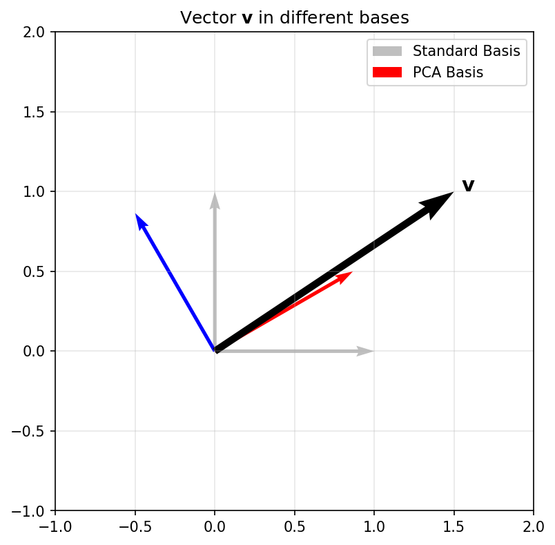

Plot.plot({
grid: true,
x: {domain: [-3, 3]},
y: {domain: [-3, 3]},
aspectRatio: 1,
marks: [
Plot.ruleX([0]),
Plot.ruleY([0]),
Plot.line(origSq, {x: "x", y: "y", stroke: "lightgray", strokeWidth: 2}),
Plot.line(transSq, {x: "x", y: "y", stroke: "dodgerblue", strokeWidth: 3})
]
})Mathematical Foundations of AI & ML
Unit 2: Linear Algebra for Machine Learning
Prof. Dr. Philipp Pelz
FAU Erlangen-Nürnberg


Title: Linear Algebra for ML
- The Geometry of Intelligence: In this unit, we move from scalar arithmetic to the geometric world of vectors and matrices.
- Dependency Role: Linear Algebra (LA) is the bedrock for PCA, SVD, Linear Regression, and Neural Networks.
- Goal: Develop an intuitive understanding of high-dimensional spaces and transformations.
Unit 2 learning outcomes
By the end of this lecture, you will be able to:
- Interpret matrices as linear operators that transform space.
- Derive PCA as a variance-maximization problem using eigendecomposition.
- Apply SVD for low-rank approximation and denoising of materials data.
- Assess conditioning and numerical stability in linear systems.
Why LA still matters in modern ML
- High-Dimensional Manifolds: Data doesn’t just “sit” in a table; it lives on non-linear manifolds in high-dim space (Sandfeld et al. 2024).
- Parallelism: Modern GPUs are optimized for matrix-vector products (\(\mathbf{y} = \mathbf{W}\mathbf{x} + \mathbf{b}\)).
- Compactness: A million parameters in a Deep Net are just a series of matrix operations.
Notation contract for the semester
- Scalars: \(a, b, c\) (italic lowercase).
- Vectors: \(\mathbf{x}, \mathbf{y}, \mathbf{w}\) (bold lowercase). Assumed to be column vectors.
- Matrices: \(\mathbf{A}, \mathbf{X}, \mathbf{W}\) (bold uppercase).
- Transposition: \(\mathbf{x}^T\) turns a column into a row.
- Inner Product: \(\langle \mathbf{x}, \mathbf{y} \rangle = \mathbf{x}^T \mathbf{y} = \sum x_i y_i\).
Scalars, vectors, matrices refresher
- Vector: A point in \(D\)-dimensional space \(\mathbb{R}^D\).
- Matrix: A collection of \(N\) vectors of dimension \(D\), written as an \(N \times D\) data matrix \(\mathbf{X}\).
- Tensors: Generalization to more than 2 dimensions (e.g., RGB images are \(H \times W \times 3\)).
Vector spaces and subspaces
- Vector Space: A set of vectors that is closed under addition and scalar multiplication.
- Subspace: A “flat” region within a larger space (e.g., a plane in 3D).
- In ML: We often look for a low-dimensional subspace that contains most of the data’s information.
Basis and change of basis
- Basis: A set of linearly independent vectors that span the space.
- Standard Basis: \(\mathbf{e}_1 = [1, 0, \dots]^T, \mathbf{e}_2 = [0, 1, \dots]^T\).
- Change of Basis: Re-representing a vector in a new coordinate system.
Geometric Plot

Linear combinations and span
- Linear Combination: \(\mathbf{v} = \sum \alpha_i \mathbf{b}_i\).
- Span: The set of all possible linear combinations of a set of vectors.
- Expressivity: A model’s ability to represent different data depends on the span of its basis functions.
Linear maps as operators
- A matrix \(\mathbf{A}\) defines a mapping \(f(\mathbf{x}) = \mathbf{Ax}\).
- Geometric View: Matrices can rotate, scale, and shear space.
- Composition: \(f(g(\mathbf{x})) = \mathbf{A}(\mathbf{Bx}) = (\mathbf{AB})\mathbf{x}\).
Column space and row space
- Column Space \(C(\mathbf{A})\): The span of the columns. All possible outputs \(\mathbf{y} = \mathbf{Ax}\).
- Row Space: The span of the rows.
- In ML: If your target \(\mathbf{y}\) is not in \(C(\mathbf{X})\), your linear model will have non-zero residual error.
Nullspace and identifiability
- Nullspace \(N(\mathbf{A})\): All \(\mathbf{x}\) such that \(\mathbf{Ax} = \mathbf{0}\).
- Identifiability: If \(N(\mathbf{X})\) is non-trivial, multiple parameter sets produce identical predictions.
Matrix \(\mathbf{A}\): \(\begin{bmatrix} 1 & 2 \\ 2 & d \end{bmatrix}\)
When d=4, the matrix is Singular. The output space squashes to a 1D line!
Plot.plot({
grid: true,
x: {domain: [-15, 15]},
y: {domain: [-15, 15]},
aspectRatio: 1,
marks: [
Plot.ruleX([0]),
Plot.ruleY([0]),
Plot.dot(mappedNull, {x: "x", y: "y", fill: d => d.is_null ? "red" : "dodgerblue", r: d => d.is_null ? 5 : 3, title: "Output Space"})
]
})ptsGridNull = {
let res = [];
for(let i=-3; i<=3; i+=0.5) {
for(let j=-3; j<=3; j+=0.5) {
res.push({x0: i, y0: j});
}
}
return res;
}
mappedNull = ptsGridNull.map(p => ({
x: 1 * p.x0 + 2 * p.y0,
y: 2 * p.x0 + dVal * p.y0,
is_null: Math.abs(1 * p.x0 + 2 * p.y0) < 0.1 && Math.abs(2 * p.x0 + dVal * p.y0) < 0.1
}))Rank and model capacity intuition
- Rank: The number of linearly independent columns (or rows).
- Full Rank: Maximum possible rank for a matrix’s dimensions.
- Capacity: Rank measures the “true” dimensionality of the transformation. Low-rank matrices compress information.
Inner products and similarity
- \(\langle \mathbf{x}, \mathbf{y} \rangle = \|\mathbf{x}\| \|\mathbf{y}\| \cos(\theta)\).
- Cosine Similarity: Measures the alignment of two vectors, independent of their magnitude.
- Orthogonality: \(\langle \mathbf{x}, \mathbf{y} \rangle = 0\). Vectors are at 90 degrees.
Norms (L1/L2/Frobenius)
- L2 Norm: \(\|\mathbf{x}\|_2 = \sqrt{\sum x_i^2}\) (Euclidean distance).
- L1 Norm: \(\|\mathbf{x}\|_1 = \sum |x_i|\) (Manhattan distance, promotes sparsity).
- Frobenius Norm: \(\|\mathbf{A}\|_F = \sqrt{\sum \sum A_{ij}^2}\) (Size of a matrix).
Distance metrics and data geometry
- Euclidean distance is the default, but it can be misleading in high dimensions (Curse of Dimensionality).
- Mahalanobis Distance: Scales distances by the inverse covariance, accounting for correlations and feature variances (Murphy 2012).
Orthogonality and orthonormal bases
- Orthonormal Basis: \(\langle \mathbf{u}_i, \mathbf{u}_j \rangle = \delta_{ij}\) (All vectors unit length and mutually perpendicular).
- Numerical Advantage: Calculating coefficients is just an inner product: \(\alpha_i = \langle \mathbf{v}, \mathbf{u}_i \rangle\).
- Stability: Orthonormal matrices \(\mathbf{Q}\) preserve norms: \(\|\mathbf{Qx}\| = \|\mathbf{x}\|\).
Projection onto subspaces
Mathematical View
- Formula: For a column space spanned by \(\mathbf{X}\): \[\hat{\mathbf{y}} = \mathbf{X}(\mathbf{X}^T\mathbf{X})^{-1}\mathbf{X}^T\mathbf{y}\]
- Orthogonality: The error \(\mathbf{e} = \mathbf{y} - \hat{\mathbf{y}}\) is perpendicular to the subspace.
viewof y1 = Inputs.range([-5, 5], {value: 2, step: 0.1, label: "y₁"})
viewof y2 = Inputs.range([-5, 5], {value: 4, step: 0.1, label: "y₂"})
viewof thetaProj = Inputs.range([0, Math.PI], {value: 0.5, step: 0.05, label: "Subspace Angle"})Move \(\mathbf{y}\) (blue) and watch its projection \(\hat{\mathbf{y}}\) (green) drop orthogonally (red dashed) onto the subspace (gray).
Plot.plot({
grid: true, x: {domain: [-5, 5]}, y: {domain: [-5, 5]}, aspectRatio: 1,
marks: [
Plot.ruleX([0]), Plot.ruleY([0]),
Plot.line([[-6*Math.cos(thetaProj), -6*Math.sin(thetaProj)], [6*Math.cos(thetaProj), 6*Math.sin(thetaProj)]], {stroke: "lightgray", strokeWidth: 4}),
Plot.arrow([{x1: 0, y1: 0, x2: yProj.x, y2: yProj.y}], {x1: "x1", y1: "y1", x2: "x2", y2: "y2", stroke: "green", strokeWidth: 4}),
Plot.arrow([{x1: 0, y1: 0, x2: y1, y2: y2}], {x1: "x1", y1: "y1", x2: "x2", y2: "y2", stroke: "blue", strokeWidth: 2}),
Plot.line([[yProj.x, yProj.y], [y1, y2]], {stroke: "red", strokeDasharray: "4", strokeWidth: 2}),
Plot.text([{x: y1, y: y2+0.5, text: "y"}], {x: "x", y: "y", text: "text", fill: "blue"}),
Plot.text([{x: yProj.x, y: yProj.y-0.5, text: "y_hat"}], {x: "x", y: "y", text: "text", fill: "green"})
]
})Projection matrix properties
- \(\mathbf{P} = \mathbf{X}(\mathbf{X}^T\mathbf{X})^{-1}\mathbf{X}^T\)
- Idempotence: \(\mathbf{P}^2 = \mathbf{P}\). Projecting twice doesn’t change anything.
- Symmetry: \(\mathbf{P}^T = \mathbf{P}\).
- Interpretation: \(\mathbf{P}\) acts as a “filter” that keeps only the component of \(\mathbf{y}\) aligned with \(\mathbf{X}\).
Least squares as projection
- Linear Regression: \(\mathbf{y} \approx \mathbf{Xw}\).
- We want \(\mathbf{Xw}\) to be the projection of \(\mathbf{y}\) onto the column space of \(\mathbf{X}\).
- This geometric view leads directly to the Normal Equations.
Normal equations derivation
- Residual error: \(\mathbf{r} = \mathbf{y} - \mathbf{Xw}\)
- Orthogonality: \(\mathbf{X}^T \mathbf{r} = \mathbf{0}\) (Error must be orthogonal to feature span)
- Substitute: \(\mathbf{X}^T (\mathbf{y} - \mathbf{Xw}) = \mathbf{0}\)
- Expand & Rearrange: \(\mathbf{X}^T \mathbf{Xw} = \mathbf{X}^T \mathbf{y}\)
- Solve: \(\hat{\mathbf{w}} = (\mathbf{X}^T\mathbf{X})^{-1}\mathbf{X}^T\mathbf{y}\) (Bishop 2006)
Condition number intuition
- Condition Number \(\kappa(\mathbf{A})\): Measures how much the output \(\mathbf{y}\) can change for a small change in input \(\mathbf{x}\).
- Ratio of largest to smallest singular values: \(\kappa = \sigma_{max} / \sigma_{min}\).
- Well-conditioned: \(\kappa \approx 1\). Ill-conditioned: \(\kappa \gg 1\).
Ill-conditioning in practice
- Causes: Multicollinearity (features are nearly linear combinations of each other).
- Effect: Small noise in \(\mathbf{y}\) leads to massive, unstable swings in \(\hat{\mathbf{w}}\).
- Visual: The loss landscape becomes a very narrow, elongated valley.
Numerical stability and scaling
- Standardization: Subtracting mean and dividing by std-dev helps equalize eigenvalues.
- Numerical Trick: Never invert \((\mathbf{X}^T\mathbf{X})\) directly. Use QR decomposition or SVD for more stable solutions.
Eigenvalues/eigenvectors recap
- \(\mathbf{Ax} = \lambda \mathbf{x}\).
- Intuition: Eigenvectors are the “characteristic directions” where the transformation is just a simple scaling by \(\lambda\).
- Observe how a symmetric matrix transforms a unit circle (gray) into an ellipse (blue). The principal axes (red) are the scaled eigenvectors!
Plot.plot({
grid: true, x: {domain: [-4, 4]}, y: {domain: [-4, 4]}, aspectRatio: 1,
marks: [
Plot.ruleX([0]), Plot.ruleY([0]),
Plot.line(circlePts, {x: "x", y: "y", stroke: "gray", strokeDasharray: "4"}),
Plot.line(ellipsePts, {x: "x", y: "y", stroke: "dodgerblue", strokeWidth: 2}),
Plot.arrow(eigenVectors, {x1: 0, y1: 0, x2: "x", y2: "y", stroke: "red", strokeWidth: 3})
]
})circlePts = Array.from({length: 100}, (_, i) => {
let t = i * 2 * Math.PI / 99; return {x: Math.cos(t), y: Math.sin(t)};
});
ellipsePts = circlePts.map(p => ({
x: s11*p.x + s12*p.y, y: s12*p.x + s22*p.y
}));
eigenVectors = {
let T = s11 + s22; let D = s11*s22 - s12*s12;
let L1 = T/2 + Math.sqrt(Math.max(0, T*T/4 - D));
let L2 = T/2 - Math.sqrt(Math.max(0, T*T/4 - D));
if (Math.abs(s12) < 0.001) return [{x: L1, y: 0}, {x: 0, y: L2}];
let v1x = L1 - s22, v1y = s12;
let n1 = Math.sqrt(v1x*v1x + v1y*v1y) || 1;
let v2x = L2 - s22, v2y = s12;
let n2 = Math.sqrt(v2x*v2x + v2y*v2y) || 1;
return [
{x: (v1x/n1)*L1, y: (v1y/n1)*L1},
{x: (v2x/n2)*L2, y: (v2y/n2)*L2}
];
}Spectral decomposition intuition
- For a symmetric matrix \(\mathbf{S}\): \(\mathbf{S} = \mathbf{U \Lambda U}^T\).
- Geometric View: A symmetric matrix is just a rotation to the eigenbasis, a scaling along those axes, and a rotation back.
- Decomposition: \(\mathbf{S} = \sum \lambda_i \mathbf{u}_i \mathbf{u}_i^T\).
Positive semidefinite matrices
- \(\mathbf{x}^T \mathbf{Ax} \ge 0\) for all \(\mathbf{x}\).
- Eigenvalues: All \(\lambda_i \ge 0\).
- Covariance Matrices are always PSD. This ensures that “variance” can never be negative.
Covariance matrix geometry
- Data Matrix \(\mathbf{X}\) (centered): \(\mathbf{S} = \frac{1}{N-1}\mathbf{X}^T\mathbf{X}\).
- The surface \(\mathbf{x}^T \mathbf{S}^{-1} \mathbf{x} = 1\) defines an Error Ellipsoid.
- The axes are the eigenvectors of \(\mathbf{S}\), with lengths proportional to \(\sqrt{\lambda_i}\).
Plot.plot({
grid: true, x: {domain: [-6, 6]}, y: {domain: [-6, 6]}, aspectRatio: 1,
marks: [
Plot.dot(randomData, {x: "x", y: "y", r: 2, fill: "gray", fillOpacity: 0.5}),
Plot.line(covarianceEllipse, {x: "x", y: "y", stroke: "red", strokeWidth: 3})
]
})validCov = Math.max(-Math.sqrt(varX*varY)*0.99, Math.min(Math.sqrt(varX*varY)*0.99, covXY));
randomData = {
let pts = [];
let L11 = Math.sqrt(varX);
let L21 = validCov / L11;
let L22 = Math.sqrt(Math.max(0, varY - L21*L21));
for(let i=0; i<400; i++) {
let u1 = Math.random(), u2 = Math.random();
let z0 = Math.sqrt(-2.0 * Math.log(u1)) * Math.cos(2.0 * Math.PI * u2);
let z1 = Math.sqrt(-2.0 * Math.log(u1)) * Math.sin(2.0 * Math.PI * u2);
pts.push({x: L11*z0, y: L21*z0 + L22*z1});
}
return pts;
}
covarianceEllipse = {
let pts = [];
let T = varX + varY; let D = varX*varY - validCov*validCov;
let L1 = T/2 + Math.sqrt(Math.max(0, T*T/4 - D));
let L2 = T/2 - Math.sqrt(Math.max(0, T*T/4 - D));
let v1x = L1 - varY, v1y = validCov;
let n1 = Math.sqrt(v1x*v1x + v1y*v1y) || 1; v1x/=n1; v1y/=n1;
let v2x = L2 - varY, v2y = validCov;
let n2 = Math.sqrt(v2x*v2x + v2y*v2y) || 1; v2x/=n2; v2y/=n2;
for(let i=0; i<=100; i++) {
let t = i * 2 * Math.PI / 100;
let c = Math.cos(t), s = Math.sin(t);
// Multiply by 2.0 to show the 2-sigma ellipse
pts.push({
x: 2.0 * (Math.sqrt(L1)*v1x*c + Math.sqrt(L2)*v2x*s),
y: 2.0 * (Math.sqrt(L1)*v1y*c + Math.sqrt(L2)*v2y*s)
});
}
return pts;
}PCA as variance maximization
- PCA seeks directions \(\mathbf{u}\) that maximize the variance of the projected data: \(J = \mathbf{u}^T \mathbf{Su}\).
- Subject to \(\|\mathbf{u}\|=1\), stationary point is \(\mathbf{Su} = \lambda \mathbf{u}\).
- The best direction is the eigenvector with the largest eigenvalue.
Projected Variance:
Rotate the line (gray). Watch the variance of the projected points (red) change! It peaks when aligned with the principal component.
Plot.plot({
grid: true, x: {domain: [-6, 6]}, y: {domain: [-6, 6]}, aspectRatio: 1,
marks: [
Plot.ruleX([0]), Plot.ruleY([0]),
Plot.link(pcaLinkData, {x1: "x1", y1: "y1", x2: "x2", y2: "y2", stroke: "pink", strokeWidth: 1}),
Plot.dot(pcaData, {x: "x", y: "y", fill: "lightgray", r: 3}),
Plot.line([[-7*Math.cos(pcaTheta), -7*Math.sin(pcaTheta)], [7*Math.cos(pcaTheta), 7*Math.sin(pcaTheta)]], {stroke: "gray", strokeWidth: 2}),
Plot.dot(pcaProjData, {x: "x", y: "y", fill: "red", r: 4})
]
})pcaData = {
let pts = [];
let ang = Math.PI / 6;
let s_major = 3.0, s_minor = 0.5;
for (let i = 0; i < 150; i++) {
let u1 = Math.max(0.0001, (Math.sin(i * 123.456) + 1)/2);
let u2 = Math.max(0.0001, (Math.cos(i * 789.123) + 1)/2);
let z0 = Math.sqrt(-2.0 * Math.log(u1)) * Math.cos(2.0 * Math.PI * u2);
let z1 = Math.sqrt(-2.0 * Math.log(u1)) * Math.sin(2.0 * Math.PI * u2);
let x_raw = s_major * z0; let y_raw = s_minor * z1;
pts.push({ x: x_raw * Math.cos(ang) - y_raw * Math.sin(ang), y: x_raw * Math.sin(ang) + y_raw * Math.cos(ang) });
}
return pts;
}
pcaProjData = pcaData.map(p => {
let c = Math.cos(pcaTheta), s = Math.sin(pcaTheta);
let proj = p.x * c + p.y * s;
return {x: proj * c, y: proj * s, proj_val: proj};
})
pcaLinkData = pcaData.map((p, i) => ({
x1: p.x, y1: p.y, x2: pcaProjData[i].x, y2: pcaProjData[i].y
}))
pcaVar = d3.variance(pcaProjData, d => d.proj_val)SVD overview
- Any \(N \times D\) matrix \(\mathbf{X}\) can be decomposed as: \(\mathbf{X} = \mathbf{U \Sigma V}^T\).
graph LR
X["X"] --> Eq["="]
Eq["="] --> U["U"]
U["U"] --> Sigma["Σ"]
Sigma["Σ"] --> VT["V^T"]
subgraph Dimensions
X---D1["N x D"]
U---D2["N x N"]
Sigma---D3["N x D"]
VT---D4["D x D"]
end
- \(\mathbf{U}\): Left singular vectors (eigenvectors of \(\mathbf{XX}^T\)).
- \(\mathbf{V}\): Right singular vectors (eigenvectors of \(\mathbf{X}^T\mathbf{X}\) - the Principal Components).
- \(\mathbf{\Sigma}\): Diagonal matrix of singular values \(\sigma_i = \sqrt{\lambda_i}\).
SVD and low-rank approximation
- Compression: By keeping only the top \(k\) singular values, we get the best rank-\(k\) approximation \(\mathbf{X}_k\).
- Denoising: Small singular values often correspond to noise. Throwing them away cleans the signal.
- Application: Background subtraction in videos or extracting latent patterns in spectroscopy.
Eckart–Young idea (conceptual)
- The matrix \(\mathbf{X}_k\) obtained by SVD is the solution to: \[ \min_{\mathbf{A}: \text{rank}(\mathbf{A})=k} \|\mathbf{X} - \mathbf{A}\|_F \]
- This means SVD gives the mathematically optimal compression in terms of squared error.
Non-negative Matrix Factorization (NMF)
- What if our data is strictly non-negative (e.g., pixel intensities, chemical concentrations, spectra)?
- NMF: Factorize \(\mathbf{X} \approx \mathbf{WH}\) subject to \(\mathbf{W} \ge 0, \mathbf{H} \ge 0\).
- Interpretation: \(\mathbf{H}\) contains the “basis” vectors (components/parts), and \(\mathbf{W}\) contains the activations (mixture weights).
- Difference from SVD/PCA: No orthogonality constraint, and no subtraction allowed. This forces a parts-based representation.
NMF vs PCA/SVD conceptually
- PCA/SVD: Basis vectors (e.g., Eigenfaces) can have negative values. They form “holistic” representations where adding/subtracting components creates the original.
- NMF: Basis vectors look like individual, localized features (a nose, a sharp spectral peak). Models data as a strictly additive combination of these parts.
- Applications: Topic modeling in NLP, discovering chemical phases in material science, and audio source separation.
Pseudo-inverse and solvability
- Moore-Penrose Pseudo-inverse: \(\mathbf{X}^\dagger = \mathbf{V \Sigma}^\dagger \mathbf{U}^T\).
- Works even if \(\mathbf{X}^T\mathbf{X}\) is not invertible.
- Provides the minimum norm solution to underdetermined systems.
Linear regression matrix form
- Model: \(\mathbf{y} = \mathbf{Xw} + \boldsymbol{\epsilon}\).
- We assume \(\boldsymbol{\epsilon} \sim \mathcal{N}(\mathbf{0}, \sigma^2 \mathbf{I})\).
- Maximum Likelihood leads to the same Normal Equations derived from geometry.
Regularization in matrix language
- Ridge Regression: \(\hat{\mathbf{w}}_{ridge} = (\mathbf{X}^T\mathbf{X} + \lambda \mathbf{I})^{-1}\mathbf{X}^T\mathbf{y}\).
- Spectral View: Adding \(\lambda \mathbf{I}\) shifts all eigenvalues of \(\mathbf{X}^T\mathbf{X}\) by \(+\lambda\), ensuring invertibility and suppressing high-variance (noisy) directions.
L1 vs L2 geometric intuition
- L2 (Ridge): Constraint is a hypersphere (blue). The solution moves smoothly toward the origin.
- L1 (Lasso): Constraint is a hyper-diamond (red). The solution is likely to hit a “corner,” setting some weights to exactly zero (Feature Selection).
viewof constraintC = Inputs.range([0.1, 2.5], {value: 0.8, step: 0.1, label: "Constraint Size (C)"})Increase C (weaker regularization, \(\lambda \to 0\)) to see the constraint regions expand to meet the unconstrained optimum (gray ellipses).
Plot.plot({
grid: true, x: {domain: [-2, 3]}, y: {domain: [-2, 3]}, aspectRatio: 1,
marks: [
Plot.ruleX([0]), Plot.ruleY([0]),
Plot.line(l2Boundary, {x: "x", y: "y", stroke: "blue", strokeWidth: 2}),
Plot.line(l1Boundary, {x: "x", y: "y", stroke: "red", strokeWidth: 2}),
Plot.dot([{x: 1.5, y: 1.0}], {x: "x", y: "y", r: 4, fill: "black"}),
Plot.text([{x: 1.5, y: 1.0, text: "w* (OLS)"}], {x: "x", y: "y", text: "text", dy: -10}),
Plot.line(lossContour1, {x: "x", y: "y", stroke: "gray"}),
Plot.line(lossContour2, {x: "x", y: "y", stroke: "gray"}),
Plot.line(lossContour3, {x: "x", y: "y", stroke: "gray"})
]
})l2Boundary = Array.from({length: 100}, (_, i) => {
let t = i * 2 * Math.PI / 99; return {x: constraintC * Math.cos(t), y: constraintC * Math.sin(t)};
});
l1Boundary = [
{x: constraintC, y: 0}, {x: 0, y: constraintC}, {x: -constraintC, y: 0},
{x: 0, y: -constraintC}, {x: constraintC, y: 0}
];
makeContour = (r) => {
return Array.from({length: 100}, (_, i) => {
let t = i * 2 * Math.PI / 99;
return {
x: 1.5 + r * 1.5 * Math.cos(t) + r * 0.5 * Math.sin(t),
y: 1.0 + r * 0.5 * Math.cos(t) + r * 0.8 * Math.sin(t)
};
});
};
lossContour1 = makeContour(0.4);
lossContour2 = makeContour(0.8);
lossContour3 = makeContour(1.3);Feature correlation and multicollinearity
- If two features are perfectly correlated, \(\mathbf{X}^T\mathbf{X}\) is singular (rank deficient).
- If highly correlated, eigenvalues are near zero, and \((\mathbf{X}^T\mathbf{X})^{-1}\) explodes.
- Solution: PCA preprocessing or Ridge regularization.
Whitening/standardization rationale
- Whitening: Transform data so \(\mathbf{S} = \mathbf{I}\).
- Formula: \(\mathbf{X}_{white} = \mathbf{X} \mathbf{V \Lambda}^{-1/2} \mathbf{V}^T\).
- This removes all correlations and gives every direction equal variance, which is crucial for some algorithms like Independent Component Analysis (ICA).
Gram matrix interpretation
- Gram Matrix \(\mathbf{K} = \mathbf{XX}^T\).
- \(K_{ij} = \langle \mathbf{x}_i, \mathbf{x}_j \rangle\). It stores all pairwise similarities between samples.
- Size: \(N \times N\). If \(N \ll D\), it’s more efficient to work with \(\mathbf{K}\) than \(\mathbf{X}\).
Kernel hint from inner products
- Many ML algorithms only depend on the data through inner products \(\langle \mathbf{x}_i, \mathbf{x}_j \rangle\).
- Kernel Trick: Replace \(\langle \mathbf{x}_i, \mathbf{x}_j \rangle\) with a non-linear function \(k(\mathbf{x}_i, \mathbf{x}_j)\) that computes an inner product in a much higher-dimensional feature space.
From LA to optimization bridge
- We’ve seen that solving \(\mathbf{Ax}=\mathbf{b}\) is equivalent to minimizing \(J(\mathbf{x}) = \frac{1}{2}\mathbf{x}^T\mathbf{Ax} - \mathbf{b}^T\mathbf{x}\).
- LA gives us the analytical solutions; Unit 3 will show how to find these solutions iteratively when matrices are too big to fit in memory.
Materials example: process matrix \(\mathbf{X}\)
- Rows: Individual batches or experiments.
- Columns: Sensor readings, alloy compositions, temperature setpoints.
- Goal: Find the subspace of “stable processing” that ignores sensor noise.
import numpy as np
import pandas as pd
from scipy.linalg import svd
# 1. Collect process data (N batches, D sensors)
data = {
'Temp_Zone1': [1050, 1052, 1048, 1055],
'Pressure': [2.1, 2.15, 2.05, 2.2],
'Ni_content': [0.45, 0.44, 0.46, 0.45]
}
df = pd.DataFrame(data)
# 2. Form the Process Matrix X
X = df.values
# 3. Standardize and find stable subspace
X_centered = X - np.mean(X, axis=0)
U, Sigma, Vt = svd(X_centered, full_matrices=False)
# Vt[0] is the primary direction of processing variance
print("Primary variation vector:", np.round(Vt[0], 2))Materials example: image embeddings
- A \(1024 \times 1024\) TEM image is a vector in \(\mathbb{R}^{1,048,576}\).
- Dimensionality Reduction: We use PCA to find the 50 “eigen-microstructures” that describe 90% of the morphological variance (McClarren 2021).
#| echo: true
#| eval: false
import numpy as np
from sklearn.decomposition import PCA
# X is our dataset of N flattened TEM images: shape (N, 1048576)
X = np.load("tem_images.npy")
# Fit PCA and extract the top 50 components
pca = PCA(n_components=50)
X_reduced = pca.fit_transform(X)
# Check how much morphological variance is captured
var_explained = np.sum(pca.explained_variance_ratio_)
print(f"Top 50 components explain {var_explained * 100:.1f}% of variance.")
# The 'eigen-microstructures' are the principal components
eigen_microstructures = pca.components_ # shape (50, 1048576)Materials example: spectra basis
- X-ray Diffraction (XRD): Each scan is a vector.
- Basis Functions: Pure phases (e.g., Austenite, Martensite) act as a basis.
- Task: Decompose a mixed spectrum into a linear combination of pure phase bases.
#| echo: true
#| eval: false
import numpy as np
# Basis matrix: columns are pure phase spectra (e.g., Austenite, Martensite)
# shape: (n_angles, n_phases)
X_basis = np.load("pure_phases_basis.npy")
# Mixed measured XRD spectrum vector
# shape: (n_angles,)
y_mixed = np.load("mixed_spectrum.npy")
# Solve Xw = y using Ordinary Least Squares
# Finds fractions 'w' that minimize reconstruction error ||Xw - y||^2
fractions, residuals, rank, s = np.linalg.lstsq(X_basis, y_mixed, rcond=None)
# Normalize the fractions to sum to 100%
volume_fractions = fractions / np.sum(fractions)
print(f"Austenite: {volume_fractions[0]*100:.1f}%")
print(f"Martensite: {volume_fractions[1]*100:.1f}%")
# The reconstructed spectrum is the projection onto the basis span
y_reconstructed = X_basis @ fractionsThe problem with unconstrained Least Squares
- The OLS solution \(\hat{\mathbf{w}} = (\mathbf{X}^T\mathbf{X})^{-1}\mathbf{X}^T\mathbf{y}\) can yield negative fractions, which is physically impossible for volume fractions!
- Non-negative Least Squares (NNLS) solves this by enforcing \(\mathbf{w} \ge 0\).
- But what if we don’t even know the pure phase basis \(\mathbf{X}\) beforehand?
Enter Non-negative Matrix Factorization (NMF)
- Unsupervised Discovery: If we only have the mixed datasets \(\mathbf{X}_{mixed}\), NMF can simultaneously discover the pure phases \(\mathbf{H}\) and their physical concentrations \(\mathbf{W}\).
- \(\mathbf{X}_{mixed} \approx \mathbf{WH}\), with \(\mathbf{W} \ge 0, \mathbf{H} \ge 0\).
- Physical Meaning: The non-negativity constraint ensures that spectra don’t have negative intensities and concentrations are strictly positive.
- It naturally extracts a parts-based representation (the separate physical phases) directly from the mixed data.
Code: NMF for Spectral Unmixing
#| echo: true
#| eval: false
from sklearn.decomposition import NMF
# X_mixed: rows are different sample spots, columns are XRD angles
# We suspect there are 2 pure phases (components)
nmf = NMF(n_components=2, init='nndsvd', random_state=42)
# W: The discovered physical concentrations (N samples x 2 phases)
W = nmf.fit_transform(X_mixed)
# H: The discovered pure phase spectra (2 phases x D angles)
H = nmf.components_Common pitfalls checklist
Mini quiz slide
- If \(\mathbf{A}\) has rank \(k\), how many non-zero singular values does it have?
- \(k\)
- \(N\)
- \(D\)
- \(1\)
- As the regularization parameter \(\lambda \to \infty\) in Ridge regression, the weights \(\hat{\mathbf{w}}\):
- Approach the OLS solution
- Approach \(\mathbf{0}\)
- Approach \(\infty\)
- Become sparse (exactly zero)
- Can standard PCA find a non-linear circular pattern in 2D?
- Yes, it identifies the radius
- No, it only finds linear orthogonal directions of max variance
- Yes, if we use enough components
- Only if the data is centered
Exercise task 1 scaffold: Projection
- Generate a 3D cloud of points.
- Project them onto a 2D plane manually using a projection matrix.
- Visualize the “shadow” of the data.
Exercise task 2 scaffold: SVD
- Load a noisy materials image.
- Perform SVD.
- Plot singular values (Scree plot).
- Reconstruct the image using \(k=5, 20, 100\) components and observe denoising.
Exercise task 3 scaffold: Least Squares
- Fit a line to noisy experimental data.
- Introduce a redundant, correlated feature.
- Observe the weight instability.
- Fix it using Ridge regression.
Summary + references + next unit link
- Key Takeaway: Matrices are transformations; SVD is the ultimate tool for understanding them.
- Next Unit: Optimization and Calculus - moving from static solutions to dynamic learning.
- Read: Neuer Ch. 2.1-2.3, Bishop Ch. 2.1.
Bishop, Christopher M. 2006. Pattern Recognition and Machine Learning. Springer.
McClarren, Ryan G. 2021. Machine Learning for Engineers: Using Data to Solve Problems for Physical Systems. Springer.
Murphy, Kevin P. 2012. Machine Learning: A Probabilistic Perspective. MIT Press.
Sandfeld, Stefan et al. 2024. Materials Data Science. Springer.

© Philipp Pelz - Mathematical Foundations of AI & ML